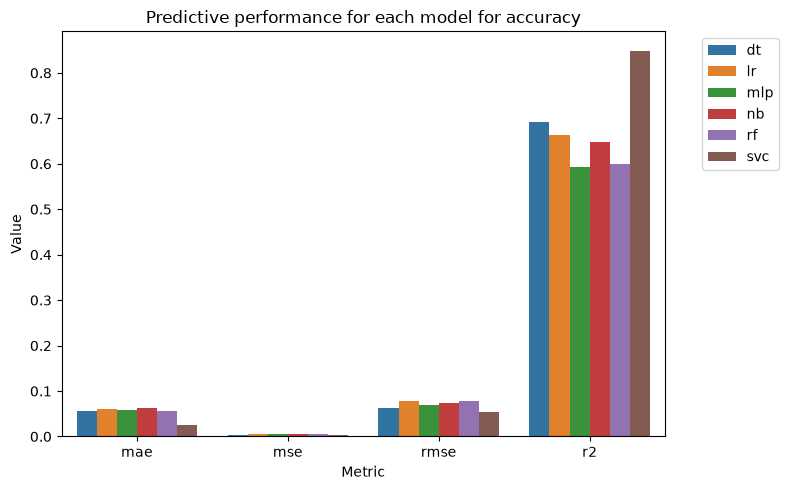
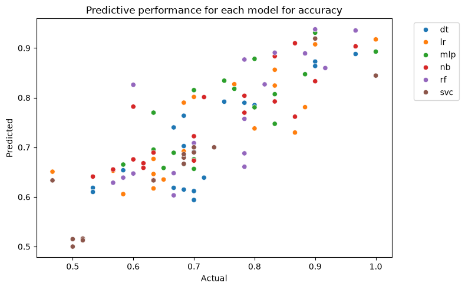
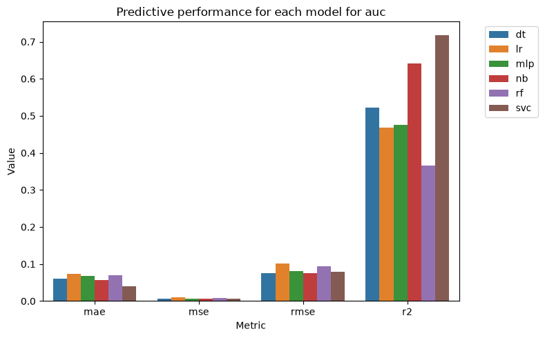
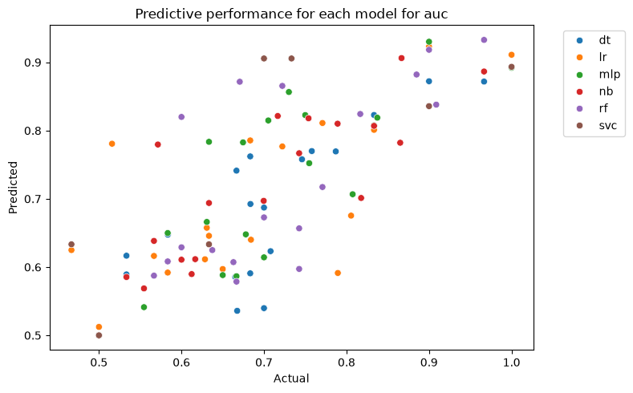
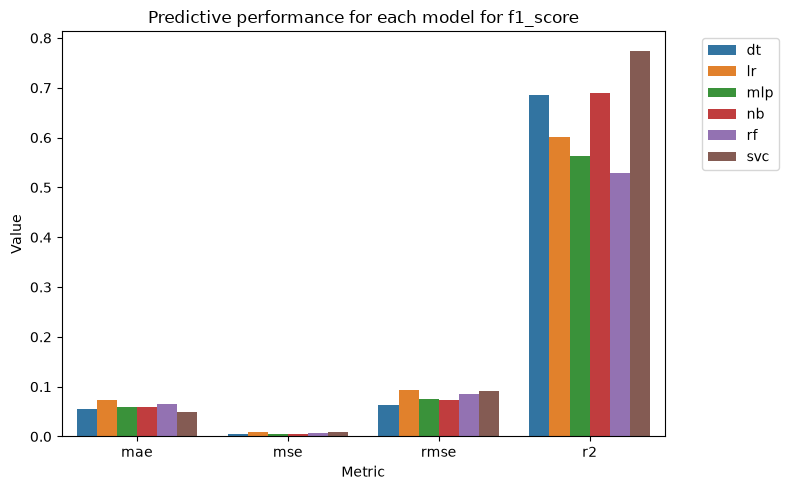
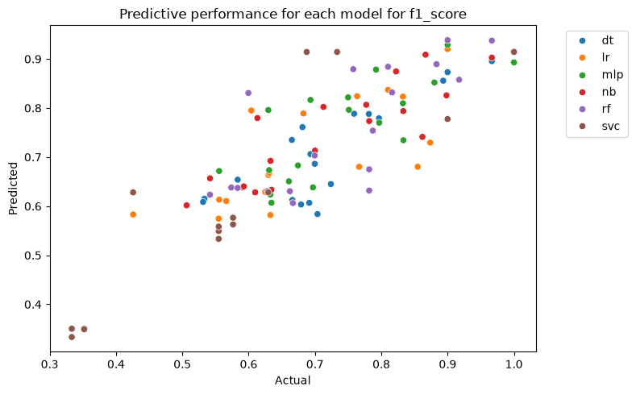
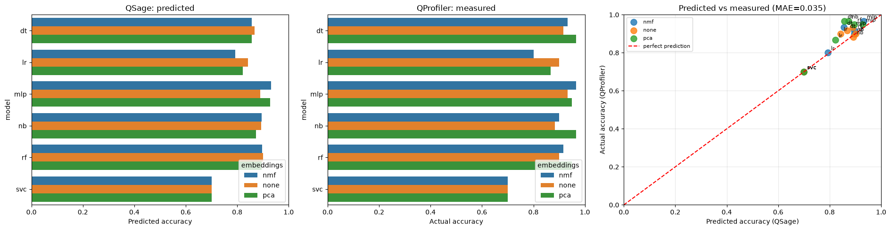

QSage Tutorial#
This tutorial demonstrates how to use Quantum Sage (QSage), a meta-learning tool that predicts which quantum or classical ML model will perform best on your dataset.
What is QSage?#
QSage is a surrogate model trained on benchmarking data that:
Predicts model performance without running expensive experiments
Recommends best models based on dataset characteristics
Saves computational resources by avoiding trial-and-error
Supports both quantum and classical ML algorithms
⏱️ Training time: the benchmark table this tutorial ships with trains all 18 sub-sages (6 models × 3 metrics) in under two minutes on a laptop. Training scales with the number of rows, the number of distinct models, and
n_iter×cv, so a table compiled from many QProfiler runs will take substantially longer.
1. Setup and Imports#
[1]:
import math
import os
import pandas as pd
import dill as pickle
# Import QSage
from qbiocode.apps.sage.sage import QuantumSage
# Resolves tutorial fixtures from either notebook tree, or from $QBC_DATA.
from qbiocode.utils import tutorial_data_path
print("✓ Imports successful")
<env>/lib/python3.12/site-packages/tqdm/auto.py:21: TqdmWarning: IProgress not found. Please update jupyter and ipywidgets. See https://ipywidgets.readthedocs.io/en/stable/user_install.html
from .autonotebook import tqdm as notebook_tqdm
✓ Imports successful
2. What QSage Needs — Input Data#
QSage requires a compiled benchmarking results table that combines:
Dataset complexity features — intrinsic properties of each dataset (e.g. number of features, number of samples, intrinsic dimension, fractal dimension, Fisher discriminant ratio, etc.)
Model performance metrics — accuracy, F1-score, AUC for each model/embedding combination
Metadata — dataset name, embedding type, model name
QSage learns one regressor per (model, metric) pair mapping complexity features to performance, so the table has to span many datasets: the features are constant within a dataset, and a single dataset gives every regressor one distinct feature vector to learn from.
The table used here#
This notebook reads qprofiler_benchmarks.csv, committed with the repository so the tutorial runs from a fresh clone. It is a real QProfiler run — not synthesized numbers — over 16 artificial datasets from the data generation tutorial, covering 3 embeddings (pca, nmf, none) × 2 train/test splits × 6 classical models (svc, dt, lr, nb, rf, mlp), for 576 rows.
Using your own results instead#
Run the QProfiler tutorial and point file_input at the ModelResults.csv it writes. Compiling several QProfiler runs into one table gives QSage more datasets to generalize over, which is what improves its recommendations.
[2]:
# The benchmark table QSage trains on. tutorial_data_path() finds the committed
# copy from either notebook tree (tutorial/ or docs/source/tutorials/), and honours
# $QBC_DATA if you keep fixtures elsewhere.
#
# To train on your own QProfiler run instead, replace this line with the path to
# the ModelResults.csv it wrote, e.g.
# file_input = '../QProfiler/ModelResults.csv'
file_input = tutorial_data_path('qprofiler_benchmarks.csv')
results_df = pd.read_csv(file_input)
results_df['embeddings'] = results_df['embeddings'].fillna('none')
results_df = results_df.reset_index(drop=True)
results_df[results_df == math.inf] = 0
results_df = results_df.drop_duplicates()
print(f"Loaded {len(results_df)} benchmark results from {os.path.basename(file_input)}")
print(f"Datasets: {results_df['Dataset'].nunique()}")
print(f"Models: {results_df['model'].nunique()} -> {sorted(results_df['model'].unique())}")
print(f"Embeddings: {sorted(results_df['embeddings'].unique())}")
results_df.head()
Loaded 576 benchmark results from qprofiler_benchmarks.csv
Datasets: 16
Models: 6 -> ['dt', 'lr', 'mlp', 'nb', 'rf', 'svc']
Embeddings: ['nmf', 'none', 'pca']
[2]:
| Dataset | embeddings | # Features | # Samples | Feature_Samples_ratio | Intrinsic_Dimension | Condition number | Fisher Discriminant Ratio | Total Correlations | Mutual information | ... | Fractal dimension | Entropy | std_entropy | iteration | model | accuracy | f1_score | time | auc | Model_Parameters | |
|---|---|---|---|---|---|---|---|---|---|---|---|---|---|---|---|---|---|---|---|---|---|
| 0 | class_data-1.csv | pca | 3 | 70 | 0.042857 | 3 | 1.476404 | 0.609986 | 0.0 | 0.160287 | ... | 1.988198 | 0.881291 | 0.0 | 1 | dt | 0.933333 | 0.930682 | 0.016511 | 0.888889 | {'estimator__ccp_alpha': 0.0, 'estimator__clas... |
| 1 | class_data-1.csv | pca | 3 | 70 | 0.042857 | 3 | 1.476404 | 0.609986 | 0.0 | 0.160287 | ... | 1.988198 | 0.881291 | 0.0 | 1 | lr | 0.900000 | 0.893333 | 0.012268 | 0.833333 | {'estimator__C': 1.0, 'estimator__class_weight... |
| 2 | class_data-1.csv | pca | 3 | 70 | 0.042857 | 3 | 1.476404 | 0.609986 | 0.0 | 0.160287 | ... | 1.988198 | 0.881291 | 0.0 | 1 | mlp | 0.966667 | 0.966074 | 0.094416 | 0.944444 | {'estimator__activation': 'relu', 'estimator__... |
| 3 | class_data-1.csv | pca | 3 | 70 | 0.042857 | 3 | 1.476404 | 0.609986 | 0.0 | 0.160287 | ... | 1.988198 | 0.881291 | 0.0 | 1 | nb | 0.966667 | 0.966074 | 0.014387 | 0.944444 | {'estimator__priors': None, 'estimator__var_sm... |
| 4 | class_data-1.csv | pca | 3 | 70 | 0.042857 | 3 | 1.476404 | 0.609986 | 0.0 | 0.160287 | ... | 1.988198 | 0.881291 | 0.0 | 1 | rf | 0.933333 | 0.930682 | 0.069780 | 0.888889 | {'estimator__bootstrap': True, 'estimator__ccp... |
5 rows × 32 columns
2b. Prepare QProfiler Output for QSage#
QSage expects a few additional metadata columns that are not directly output by QProfiler. The cell below adds them automatically:
``datatype`` — the file/dataset name (derived from
Dataset)``model_embed_datatype`` — a combined identifier string in the format
model_embedding_datatype``iteration`` — trial/run index (set to 1 if not present)
[3]:
# Add columns required by QSage that are not directly in QProfiler output
# 'datatype': use the Dataset column as-is
results_df['datatype'] = results_df['Dataset']
# 'model_embed_datatype': combined identifier used internally by QSage
results_df['model_embed_datatype'] = (
results_df['model'] + '_' +
results_df['embeddings'] + '_' +
results_df['datatype']
)
# 'iteration': use existing column if present, otherwise default to 1
if 'iteration' not in results_df.columns:
results_df['iteration'] = 1
print("✓ QProfiler output prepared for QSage")
print(f"Added columns: datatype, model_embed_datatype, iteration")
results_df[['Dataset', 'embeddings', 'model', 'datatype', 'model_embed_datatype', 'iteration']].head()
✓ QProfiler output prepared for QSage
Added columns: datatype, model_embed_datatype, iteration
[3]:
| Dataset | embeddings | model | datatype | model_embed_datatype | iteration | |
|---|---|---|---|---|---|---|
| 0 | class_data-1.csv | pca | dt | class_data-1.csv | dt_pca_class_data-1.csv | 1 |
| 1 | class_data-1.csv | pca | lr | class_data-1.csv | lr_pca_class_data-1.csv | 1 |
| 2 | class_data-1.csv | pca | mlp | class_data-1.csv | mlp_pca_class_data-1.csv | 1 |
| 3 | class_data-1.csv | pca | nb | class_data-1.csv | nb_pca_class_data-1.csv | 1 |
| 4 | class_data-1.csv | pca | rf | class_data-1.csv | rf_pca_class_data-1.csv | 1 |
3. Initialize QSage#
Important: The current QSage API uses data_input parameter (not data, features, metrics, sage_type).
[4]:
# Hold out one dataset to predict on, and train on the rest.
held_out_dataset = results_df['Dataset'].unique()[0]
print(f"Held-out dataset: {held_out_dataset}")
# Matched by equality, not str.contains(): the dataset names generated by the data
# generation tutorial share a prefix ('class_data-1' is a prefix of 'class_data-16'),
# so a substring match held out 7 datasets while reporting 1 -- and any name that
# happened to be a prefix of every other would empty the training set entirely.
train_df = results_df[results_df['Dataset'] != held_out_dataset]
held_out_df = results_df[results_df['Dataset'] == held_out_dataset]
print(f"Training data: {len(train_df)} results over {train_df['Dataset'].nunique()} datasets")
print(f"Held-out data: {len(held_out_df)} results over {held_out_df['Dataset'].nunique()} dataset")
# Initialize QSage
sage = QuantumSage(data_input=train_df)
print(f"\n✓ QSage initialized")
print(f"Available models: {sage._available_models}")
print(f"Available metrics: {sage._available_metrics}")
Held-out dataset: class_data-1.csv
Training data: 540 results over 15 datasets
Held-out data: 36 results over 1 dataset
✓ QSage initialized
Available models: ['dt', 'lr', 'mlp', 'nb', 'rf', 'svc']
Available metrics: ['accuracy', 'auc', 'f1_score']
4. Train QSage Sub-Sages#
Train one surrogate regressor per (ML model, metric) pair — 18 of them for this table.
⏱️ Training time: the benchmark table this tutorial ships with trains all 18 sub-sages (6 models × 3 metrics) in under two minutes on a laptop. Training scales with the number of rows, the number of distinct models, and
n_iter×cv, so a table compiled from many QProfiler runs will take substantially longer.
[5]:
# Train sub-sages with Random Forest.
# n_iter / cv control the randomized hyperparameter search per sub-sage; lower them
# for a faster pass, raise them for better-fitted surrogates.
print("Training QSage sub-sages...")
sage.train_sub_sages(
test_size=0.2,
sage_type='random_forest', # or 'mlp', 'xgboost_optuna'
n_iter=50, # hyperparameter search iterations
cv=5 # cross-validation folds
)
print("✓ Training complete!")
Training QSage sub-sages...
Working on accuracy
Working on dt
Working on lr
Working on mlp
Working on nb
Working on rf
Working on svc
Working on auc
Working on dt
Working on lr
Working on mlp
Working on nb
Working on rf
Working on svc
Working on f1_score
Working on dt
Working on lr
Working on mlp
Working on nb
Working on rf
Working on svc
✓ Training complete!
5. Visualize Training Results#
How well each sub-sage fits its own held-out portion, per metric.
[6]:
# Plot training results
sage.plot_results(figsize=(8, 5))






[6]:
[<Figure size 800x500 with 1 Axes>,
<Figure size 800x500 with 1 Axes>,
<Figure size 800x500 with 1 Axes>,
<Figure size 800x500 with 1 Axes>,
<Figure size 800x500 with 1 Axes>,
<Figure size 800x500 with 1 Axes>]
6. Make Predictions#
predict() ranks every model for one dataset representation, so it takes exactly one row of dataset-complexity features — the columns describing intrinsic properties of the data (intrinsic dimension, number of samples, Fisher discriminant ratio, and so on). It derives the same SLGH feature that training added, so pass the complexity columns exactly as they appear in the QProfiler table.
Those features are measured on the embedded data, not the raw data. So the held-out dataset does not have one feature vector — it has one per embedding, and PCA-projected data genuinely looks different from the unembedded original (3 features vs 10, different intrinsic dimension, different class separability). Which model QSage recommends can therefore depend on the representation, which is the more useful question to ask it. The cell below asks once per embedding.
The returned table is ranked by predicted metric × r2, so the model at the top is the one QSage both rates highly and predicts confidently. A low r2 means the surrogate for that model does not fit well and its prediction should be discounted — which is why the ranking uses the product rather than the prediction alone.
[7]:
# predict() ranks models for a single feature vector, and refuses a multi-row frame
# rather than silently ranking on whichever row sorted first. That matters here:
# `held_out_df[sage._columns_data_features].drop_duplicates()` looks like it should
# give one row for the dataset, but complexity features are computed on the embedded
# data, so it gives one per (embedding, iteration).
ranked_per_embedding = []
for embedding in sorted(held_out_df['embeddings'].unique()):
rows = held_out_df[held_out_df['embeddings'] == embedding]
# One iteration's row stands for the embedding. Iterations differ only by the
# train/test split; averaging them would invent a feature vector QSage never saw.
features = rows[sage._columns_data_features].iloc[[0]]
ranked = sage.predict(features, metric='accuracy')
ranked_per_embedding.append(ranked.assign(embeddings=embedding))
predictions = pd.concat(ranked_per_embedding, ignore_index=True)
print(f"Held-out dataset: {held_out_df['Dataset'].iloc[0]}")
print("\nHow the dataset looks under each embedding:")
print(
held_out_df.groupby('embeddings')[
['# Features', 'Intrinsic_Dimension', 'Fisher Discriminant Ratio']
].first().to_string()
)
print("\nQSage's top pick per embedding (ranked by predicted accuracy x r2):")
for embedding, group in predictions.groupby('embeddings'):
best = group.iloc[0]
print(f" {embedding:>5}: {best['model']:<4} "
f"predicted accuracy {best['accuracy']:.3f} (r2 {best['r2']:.3f})")
Held-out dataset: class_data-1.csv
How the dataset looks under each embedding:
# Features Intrinsic_Dimension Fisher Discriminant Ratio
embeddings
nmf 3 3 2.082134
none 10 8 0.354788
pca 3 3 0.609986
QSage's top pick per embedding (ranked by predicted accuracy x r2):
nmf: svc predicted accuracy 0.700 (r2 0.849)
none: dt predicted accuracy 0.867 (r2 0.692)
pca: svc predicted accuracy 0.700 (r2 0.849)
7. Visualize QSage Predictions vs QProfiler Actual Results#
Three views of the same held-out dataset, all keyed on (model, embedding) so predicted and measured numbers are compared like for like:
Left: what QSage predicted, per model and embedding
Middle: what QProfiler actually measured, averaged over iterations
Right: the two against each other, with mean absolute error
The diagonal on the right panel is perfect prediction. Points below it are models QSage was optimistic about; points above it are ones it undersold. With a 15-dataset training table this is a demonstration of the mechanism rather than a well-fitted surrogate — expect visible error, and read r2 before trusting any single point.
[8]:
import matplotlib.pyplot as plt
import seaborn as sns
# Averaged over iterations, which differ only by the train/test split.
actual_results = (
held_out_df.groupby(['model', 'embeddings'])['accuracy'].mean()
.reset_index().rename(columns={'accuracy': 'actual_accuracy'})
)
# Keyed on both columns: comparing a per-embedding prediction against an accuracy
# averaged across embeddings would blur exactly the effect this section is about.
comparison = predictions.merge(actual_results, on=['model', 'embeddings'])
fig, axes = plt.subplots(1, 3, figsize=(19, 5))
order = sorted(predictions['model'].unique())
sns.barplot(data=predictions, y='model', x='accuracy', hue='embeddings',
order=order, ax=axes[0])
axes[0].set(xlim=(0, 1), xlabel='Predicted accuracy', title='QSage: predicted')
sns.barplot(data=actual_results, y='model', x='actual_accuracy', hue='embeddings',
order=order, ax=axes[1])
axes[1].set(xlim=(0, 1), xlabel='Actual accuracy', title='QProfiler: measured')
ax = axes[2]
for embedding, group in comparison.groupby('embeddings'):
ax.scatter(group['accuracy'], group['actual_accuracy'], s=90, alpha=0.8, label=embedding)
for _, row in comparison.iterrows():
ax.annotate(row['model'], (row['accuracy'], row['actual_accuracy']),
textcoords='offset points', xytext=(5, 4), fontsize=8)
ax.plot([0, 1], [0, 1], 'r--', label='perfect prediction')
mae = (comparison['accuracy'] - comparison['actual_accuracy']).abs().mean()
ax.set(xlim=(0, 1), ylim=(0, 1), xlabel='Predicted accuracy (QSage)',
ylabel='Actual accuracy (QProfiler)',
title=f'Predicted vs measured (MAE={mae:.3f})')
ax.grid(True, alpha=0.3)
ax.legend(fontsize=8)
plt.tight_layout()
plt.show()
# Did QSage pick the model that actually won, for each embedding?
print("Top pick vs actual best, per embedding:")
for embedding, group in comparison.groupby('embeddings'):
predicted_best = group.sort_values('accuracy*r2', ascending=False).iloc[0]
actual_best = group.sort_values('actual_accuracy', ascending=False).iloc[0]
hit = "correct" if predicted_best['model'] == actual_best['model'] else "missed"
print(f" {embedding:>5}: QSage picked {predicted_best['model']:<4} "
f"(actually {predicted_best['actual_accuracy']:.3f}), "
f"best was {actual_best['model']:<4} at {actual_best['actual_accuracy']:.3f} "
f"-- {hit}")

Top pick vs actual best, per embedding:
nmf: QSage picked svc (actually 0.700), best was mlp at 0.967 -- missed
none: QSage picked dt (actually 0.917), best was mlp at 0.933 -- missed
pca: QSage picked svc (actually 0.700), best was nb at 0.967 -- missed
8. Save and Reload the Trained QSage Model#
dill rather than pickle: the sub-sages hold fitted scikit-learn search objects, which dill serializes reliably.
Only load a .pkl you produced yourself or obtained from a source you trust — unpickling executes code from the file.
[9]:
# Save the trained model
file_sage = 'my_qsage_model.pkl'
with open(file_sage, 'wb') as f:
pickle.dump(sage, f)
print(f"✓ Model saved to {file_sage}")
# Reload it and confirm it predicts identically -- this is how you skip retraining
# in a later session.
with open(file_sage, 'rb') as f:
sage_reloaded = pickle.load(f)
# Re-run the same per-embedding predictions through the reloaded sage. Comparing the
# whole table, not one row, so a sub-sage that failed to pickle cannot hide behind an
# embedding that happened to survive.
reloaded_predictions = pd.concat(
[
sage_reloaded.predict(
held_out_df[held_out_df['embeddings'] == embedding][
sage_reloaded._columns_data_features
].iloc[[0]],
metric='accuracy',
).assign(embeddings=embedding)
for embedding in sorted(held_out_df['embeddings'].unique())
],
ignore_index=True,
)
print(f"✓ Reloaded from {file_sage}")
print("Predictions identical after round-trip: "
f"{predictions.equals(reloaded_predictions)}")
✓ Model saved to my_qsage_model.pkl
✓ Reloaded from my_qsage_model.pkl
Predictions identical after round-trip: True
Summary#
In this tutorial, you learned how to:
✅ Understand what input data QSage requires and why it must span many datasets
✅ Prepare a QProfiler results table for QSage (add the required metadata columns)
✅ Initialize QSage with
QuantumSage(data_input=df)✅ Train sub-sages with
train_sub_sages()✅ Inspect how well each sub-sage fits with
plot_results()✅ Predict model performance on a held-out dataset with
predict()✅ Read the ranking as predicted metric ×
r2, discounting poorly-fitted surrogates✅ Save a trained QSage model and reload it to skip retraining
Key API Points#
Initialization:
QuantumSage(data_input=df)— only takesdata_inputTraining:
sage.train_sub_sages(sage_type='random_forest')— the sage type is chosen herePrediction:
sage.predict(features, metric='accuracy')— one metric per callVisualization:
sage.plot_results()
Next Steps#
Compile more runs: more datasets in the table means better generalization
Add quantum models: a QProfiler config including
qsvc/vqc/qnn/pqkputs quantum models into the recommendations tooTry other sage types:
'mlp'or'xgboost_optuna'
See Also#
QProfiler Tutorial — generates the input table
Data Generation Tutorial — creates more datasets